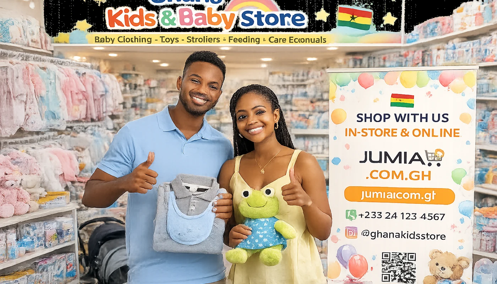
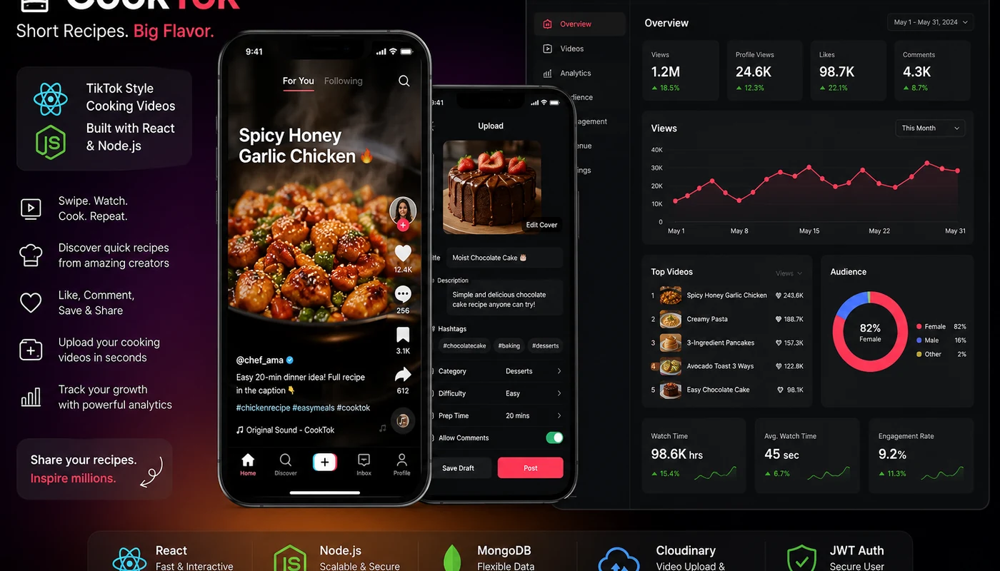

HTML & Semantic Structure78%
KNUST Diploma in Information Technology Student
Building digital ideas that connect technology, commerce and community.
I am Vincent Agana, an IT student and digital entrepreneur in Ghana. I combine web development, e-commerce operations and local product sourcing to create practical solutions with real-world value.
IT + Business
Practical digital solutions
About Me
Learning technology while applying it to real ventures.
I am pursuing a Diploma in Information Technology at the Kwame Nkrumah University of Science and Technology. My studies are helping me strengthen my knowledge of web development, programming, networking, databases and information systems.
Beyond the classroom, I manage e-commerce activities, source handmade products from Northern Ghana and develop digital product ideas such as CookTok. These experiences help me connect technical knowledge with customer needs, business operations and local opportunities.
KNUSTDiploma in IT
GhanaBased and building
4Portfolio ventures
Skills
Developing a balanced technical and entrepreneurial skill set.
These bars represent my current learning confidence, not formal professional certification.
CSS & Responsive Layout72%
JavaScript Fundamentals55%
React & Node.js Learning58%
Networking & IT Support68%
E-commerce Operations82%
My Journey
Education, ventures and continuous growth.
Current
Diploma in Information Technology — KNUST
Building knowledge in web development, programming, networking, databases and information systems.
Business Venture
Prisvic Mothercare
Retailing children and mothercare products through in-store operations and online marketplaces such as Jumia Ghana.
Local Commerce
Northern Ghana Artisan Sourcing
Exploring reliable sourcing opportunities for Bolga baskets, leather goods and calabash products for resale.
Technology Project
CookTok Application
Developing a TikTok-style cooking video application with React, Node.js, video uploads and creator analytics.
Selected Projects & Ventures
Work that reflects my interests in technology and commerce.

E-commercePrisvic Mothercare
A children and mothercare retail venture serving customers through physical sales and Jumia Ghana.
RetailJumiaProduct Listing
View Project
Sourcing
Artisan Product Sourcing
Sourcing handmade Bolga baskets, leather goods and calabash products for local and international resale.
ResearchSupplyMarketplaces
View Project

Web ApplicationCookTok
A short-form cooking video application with a scrollable feed, uploads, engagement tools and creator analytics.
ReactNode.jsMongoDB
View Project
Personal Portfolio Website
A responsive portfolio developed with semantic HTML, modern CSS and JavaScript interactions, then prepared for GitHub Pages.
HTML5CSS3JavaScript
View Project
Contact
Let us connect and build something useful.
I am open to learning opportunities, project discussions and professional networking.